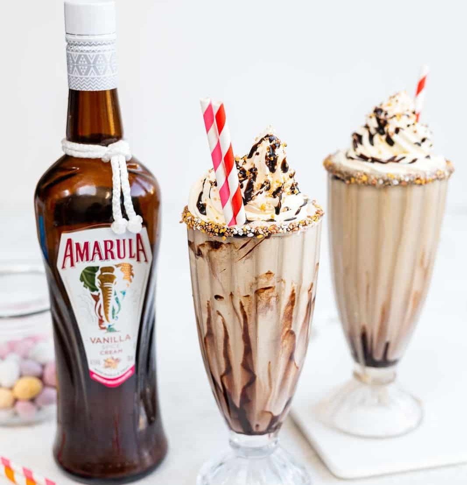

Boozy Milkshake
Prep time :
10min
Yield :
4
Ingriedients
5 cups (750g) soft scoop vanilla ice cream
⅓ cup (80ml) Amarula Vanilla Spice
2 tsp vanilla extract
⅓ cup cold milk or more, as needed
5 chocolate sandwich cookies or cookies of your choice
chocolate syrup
whipped cream , optional, for topping
Steps
Chill two large sundae glasses (or four tall glasses) in the fridge. Drizzle chocolate sauce on the inside of the glass.
Dip the glass rim into a shallow plate filled with chocolate syrup, then into a plate full of sprinkles. Keep chilled.
Put the Amarula Vanilla Spice, milk, vanilla extract, softened vanilla ice cream and a handful of broken up cookies into a blender.
Blend until smooth, you might need to add more milk if the milkshake is too thick and your blender is struggling.
Pour the milkshake into the prepared glass, leaving a small gap at the top for the whipped cream.